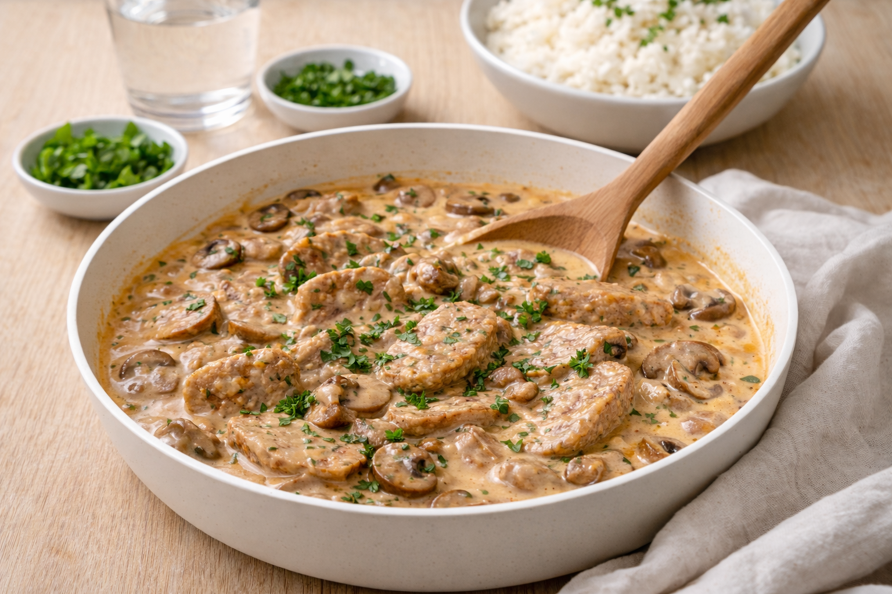

Fläskfilégryta med svamp och grädde
Krämig fläskfilégryta med champinjoner och grädde. Enkelt vardagsrecept som passar ris eller potatis.

Ingredienser
- 500 g fläskfilé, skivad eller strimlad
- 250 g champinjoner, skivade
- 1 gul lök, skivad
- 2 dl matlagningsgrädde (eller grädde)
- 1 dl crème fraiche
- 1 msk dijonsenap
- 1 tsk soja (valfritt)
- Salt och svartpeppar
- 1 msk smör/olja
Så lagar du
- Salta och peppra fläskfilén. Bryn snabbt i smör/olja och lägg åt sidan.
- Stek lök och champinjoner tills de får färg.
- Rör ner grädde, crème fraiche, dijon och ev. soja. Låt sjuda 5–8 minuter.
- Lägg tillbaka köttet och låt sjuda 3–5 minuter (inte längre – då blir det torrt).
- Smaka av med salt och peppar. Servera med ris, potatis eller pasta.
Tips & variationer
- Byt champinjoner mot kantareller när det är säsong.
- För extra syra: toppa med lite pressad citron vid servering.